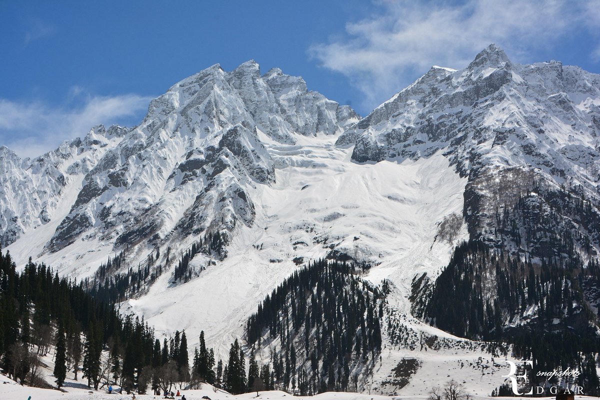
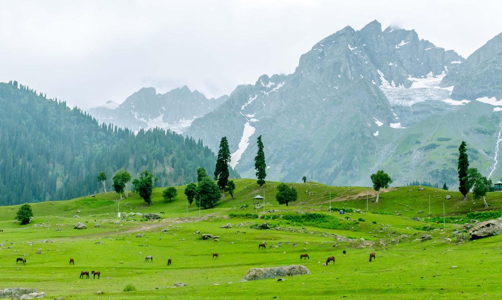
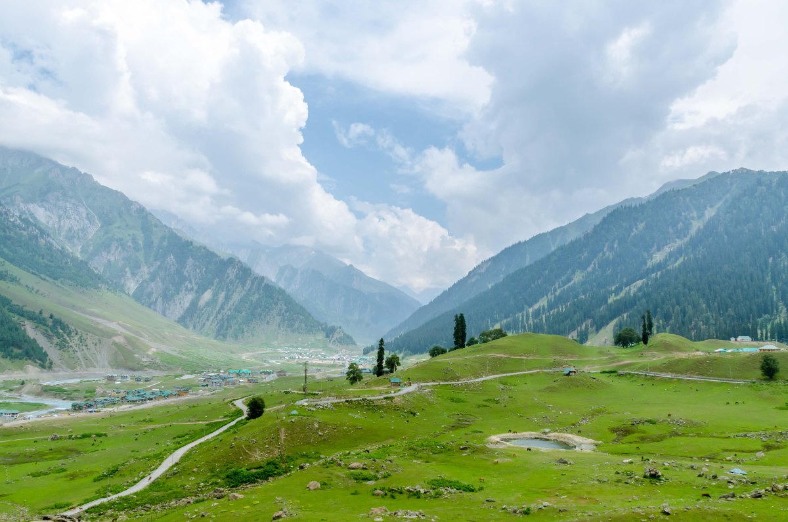
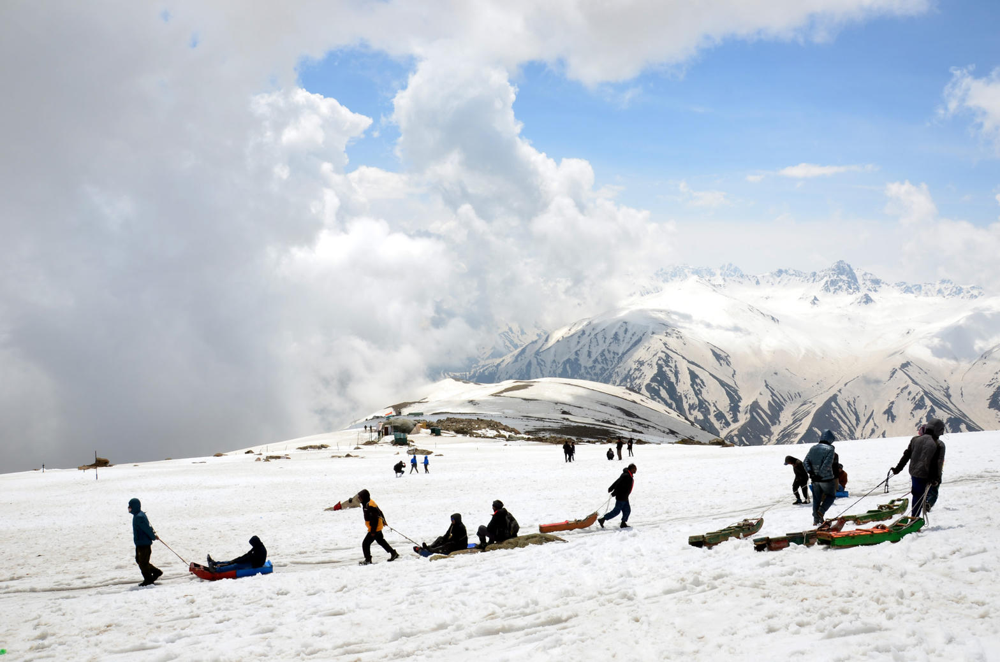

Meadow of Gold — glacier walks, the Sindh river and the road toward high passes
Sonmarg — also written Sonamarg — sits on the Sindh river about two and a half hours northeast of Srinagar. The name comes from the way late-day light turns the high grass gold. It is the last major valley stop before the road climbs toward Zojila, which is why the landscape already feels more alpine than the Srinagar bowl: tighter walls, louder water, and a glacier you can reach in a morning.
Thajiwas is the signature outing — a short trek or pony ride from the market to a living ice field. Many travellers visit as a long day trip. A night stay is worthwhile in late spring and early autumn, when the meadow empties after the day coaches leave.

The road typically reopens. Ice still sits close to the path and the grass is just turning.
Wildflowers, open glacier trails and the busiest window for day coaches from Srinagar.
The meadow earns its name. Light is low and warm; nights turn sharp.
The valley often closes under snow. We only plan this window with a local weather check.



A glacier day from Srinagar or a quieter overnight — we will match Sonmarg to your dates and the rest of the valley circuit.